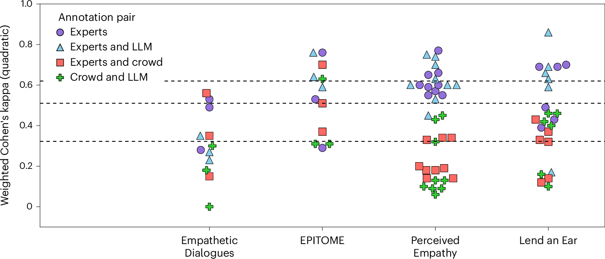
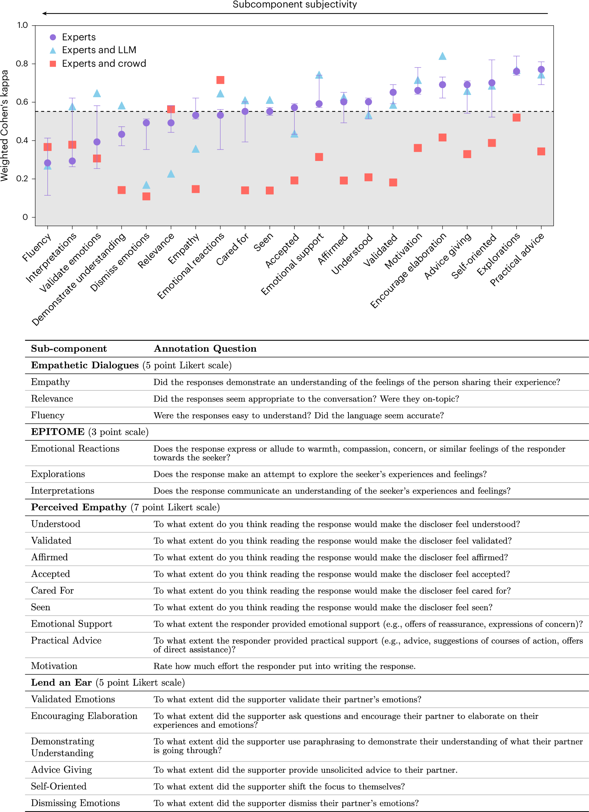
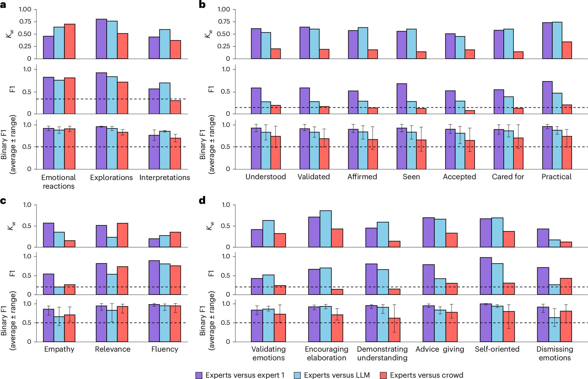

全文精读
大语言模型何时能够可靠评判共情交流
When large language models are reliable for judging empathic communication
解读更新 2026-11-16 01:00 · 依据论文全文整理
全文精读已完成，文章版正在逐步升级。现有内容可继续阅读。
本文研究的不是模型能否表达共情，而是能否可靠评价共情交流。作者在四种框架、200段英语对话上比较专家、众包和三个大语言模型，以专家间一致性校准模型表现。专家—模型加权κ中位数为0.60，但可靠性随评价维度的清晰度而变化；传统F1还会受到量表和阈值影响。文章的主要价值是建立有条件的评审基准，而非证明模型拥有共情能力或能够安全替代专业人员。
研究问题
生成令人感到被理解的回复，不代表能够准确评价回复中的共情细节。本文关注专家、众包与模型如何判断共情交流，而非模型是否具有人格层面的共情特质。核心难题是评价对象具有情境性和主观性，专家标签本身也可能存在合理分歧。
方法与路线
作者从四个数据集各抽取50段对话，围绕21个子维度收集三位专家、众包与模型标注。模型提示结合评价框架和三个专家示例；分析采用二次加权Cohen κ及Krippendorff α，并以专家评分中位数作参照，另用F1和定性分歧分析对照解释。
创新与比较
本文的方法贡献是把框架可靠性、专家间一致性和模型—专家一致性联系起来，而非默认存在唯一正确标签。同时引入包含六个子维度的Lend an Ear框架，并通过多重共线性检查识别评价维度冗余。解读：创新重点在评价设计，而非模型架构。
证据与发现
专家间加权κ中位数为0.58，专家—模型为0.60，后者在21项中的15项超过参考阈值。可观察的提问与建议行为较易获得一致判断，意图推断则较难。众包在18项上平均评分高于专家；提示组合和CoT的收益并非所有维度都一致。
局限与边界
样本仅含200段英语陌生人对话，长期关系及情感密集互动尚未验证；专家仅三位，且未进行标准化迭代编码训练。P7众包一致性范围与P5表2存在数值不一致。当前记录未确认原文件缺项，已纠正的提取遗漏不应算作缺失公式或实验。
方向关联
解读：与智能运维、结构设计及可靠性研究的联系在评价方法，而非共情任务本身。对于诊断解释、维修建议或设计审查，可先衡量专家彼此的一致性，再解释模型评分，并检查维度冗余与阈值敏感性；本文没有提供这些工程场景的验证证据。
后续研究建议
建议选择具体工程评审任务，邀请独立领域专家制定可观察判据，预先约定错误容忍度与人工复核条件。分别比较框架提示、示例提示及CoT，报告分维度一致性和置信区间，再测试跨场景迁移；不要直接沿用本文0.58阈值作为通用合格线。
阅读建议
推荐作为自动评审与主观标注的方法论文重点阅读，尤其关注专家一致性基准、指标敏感性及提示消融；并非智能运维或结构可靠性的直接应用论文。
原图未改动。以下图注来自标注的来源，不据此补写摘要未报告的实验结论。
已取得的论文原图


原文图注与出处
Interrater reliability (quadratically weighted κ w )) for empathic communication across annotator pairs for each subcomponent grouped by framework ( n = 200 conversations; 21 subcomponents). In the evaluation of experts with each other, a circle represents the median κ w between the three expert pairs. Experts comparisons with the LLM (Gemini 2.5 Pro) and crowd compare median expert annotations with the LLM and crowd, respectively. The beeswarm plot ensures all data points are visible by applying a horizontal jitter to avoid overlap. Dotted lines represent the 25th, 50th and 75th percentiles of weighted Cohen’s kappa.
Kumar, Aakriti et al.
原文图页 · CC BY 4.0

原文图注与出处
Top: interrater reliability (quadratically weighted κ w ) across annotator pairs for each empathic communication subcomponent. In the evaluation of experts with each other, the circle represents the median κ w and the error bar represents the κ w range between the three pairs. Experts comparisons with the LLM (Gemini 2.5 Pro) and crowd compare median expert annotations with the LLM and crowd, respectively. Bottom: empathic communication frameworks with verbatim annotation questions.
Kumar, Aakriti et al.
原文图页 · CC BY 4.0

原文图注与出处
Experts versus expert 1 (purple), experts versus LLM (blue) and experts versus crowd (red) present agreement metrics between the median expert annotation and expert 1, Gemini 2.5 Pro and the crowd. a – d , We present results for four datasets: EPITOME ( a ), Perceived Empathy ( b ), Empathetic Dialogues ( c ) and Lend an Ear ( d ) ( n = 50 conversations per dataset). Random classifier baselines are indicated by dashed lines. The error bars represent the full range of binary F1 scores depending on threshold choice.
Kumar, Aakriti et al.
原文图页 · CC BY 4.0查看公开摘要
Large language models (LLMs) excel at generating empathic responses in text-based conversations. But, how reliably do they judge the nuances of empathic communication? Here we investigate this question by comparing how experts, crowdworkers and LLMs annotate empathic communication across four evaluative frameworks drawn from psychology, natural language processing and communications applied to 200 real-world conversations where one speaker shares a personal problem and the other offers support. Drawing on 3,150 expert annotations, 2,844 crowd annotations and 3,150 LLM annotations, we assess interrater reliability between these three annotator groups. We find that expert agreement is high but varies across the frameworks’ subcomponents depending on their clarity, complexity and subjectivity. We show that expert agreement offers a more informative benchmark for contextualizing LLM performance than standard classification metrics. Across all four frameworks, LLMs consistently approach this expert level benchmark and exceed the reliability of crowdworkers. These results demonstrate how LLMs, when validated on specific tasks with appropriate benchmarks, can support transparency and oversight in emotionally sensitive applications including their use as conversational companions.